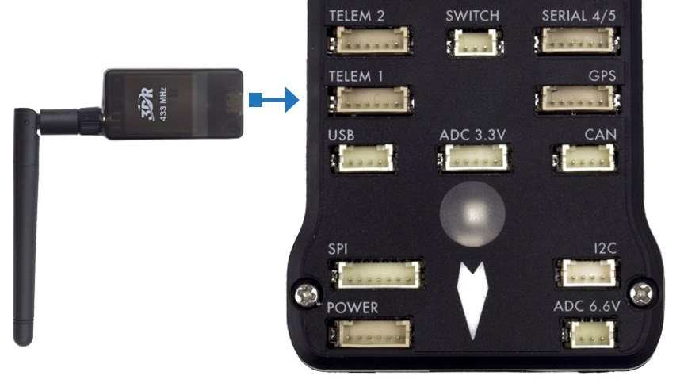

Connections¶
The image below shows the connections of the sensors and other items included in the Pixhawk. Each part will be analyzed in more detail in the following sections.
Buzzer and Safety Switch¶
The buzzer provides audible signals that indicate the situation of the UAV. While the switch operates in the safety of the aircraft, locking and unlocking the engines.
Note
The safety switch is activated by default and when activated, it does not allow flight, blocking the engines. To disable safe mode, press and hold the switch for 1 second. You can activate safe mode again by pressing the switch.
To connect the buzzer and the safety switch (required items), simply connect them to the Pixhawk as shown below.

Slitter I2C¶
The I2C slitter expands the number of I2C ports allowing the connection of up to four peripherals to the Piwhawk. Use a 4-wire cable to connect the I2C slitter and to power an external compass, an LED display, a digital air speed sensor and/or any other peripheral compatible to the vehicle.
Airspeed Sensor¶
Em edição...
GPS + Compass¶
The GPS, another indispensable device, must be connected to the GPS port (6-pin) using the 6-wire cable provided in the kit. The compass connection is optional, but strongly recommend its use. To connect it, connect a 4-wire cable to an I2C port on the I2C slitter, as shown below.
Note
The GPS/Compass should be mounted on the aircraft's chassis as far away from other electronic components as possible, with the indicator arrow facing forward and as aligned as possible with the Pixhawk.
Radio Control (RC)¶
The radio control (RC) system is necessary if you want to manually control your vehicle, as the Pixhawk does not require a radio system for autonomous flight modes.
To connect the radio control system, is necessary need to select a compatible transmitter/receiver and then link it up so that they can communicate.
Tip
Read the instructions that came with your transmitter/receiver.
The following instructions show how to connect the different types of receivers to the Pixhawk:
Spektrum and DSM receivers connect to the SPKT/DSM input.
PPM-SUM and S.BUS receivers connect to ground, power and RC signal pins, as shown.
The PPM and PWM receivers that have an individual wire for each channel must connect to the RC port via a PPM encoder (PPM-Sum receivers use a single signal wire for all channels).
For more information on selecting a radio system, receiver compatibility, and connecting your transmitter and receiver pair, see: Remote control transmitters and receivers.
Telemetry¶
Telemetry modems can be used to communicate and control a vehicle in flight from an ground station (for example, you can direct the UAV to a specific position or load a new mission). A modem must be connected to your vehicle, as shown below. Another modem must be connected to the ground station computer or mobile device (usually via a USB port).
Power Module¶
The Power module (PM) supplies power to the battery flight controller and also sends information about the analog current and voltage supplied by the module (including power to the flight controller and motors, etc.).
The output of the power module (PM) must be connected to the Pixhawk ** POWER ** port using a 6-wire cable, as shown in the image. The input module must be connected to a battery Po, while the main output will be responsible for supplying power to the ESCs and the aircraft engine (possibly through a power distribution board, depending on the aircraft).
Distance Sensor¶
Pixhawk supports several different distance sensors, including Lidars (which use lasers or infrared rays for distance measurements) and Sonars (which use ultrasonic waves), and also include the Maxbotix Sonar and Pulsed Light LED range finders. Therefore, the installation varies from device to device. More information about the sensor configuration can be seen in Rangefinders.
Example of some compatible distance sensors¶
To implement the project, the Lidar sensor was chosen to enable the automatic landing function due to its greater accuracy compared to the others. Lidar sensor can be connected to the Pixhawk in two ways, via the I2C protocol on the I2C port (or I2C slitter) or by pulse-width-modulation (PWM) on the PWM track.
According to the Pixhawk documentation, the Lidar used presents interference problems with other devices when connected to the I2C port. Thus, the PWM connection was chosen. A connection diagram can be seen in the table below and the assembly diagram can be seen in the following figure, where the value of the resistor can vary between 200Ω and 1kΩ 1.
Sinal LIDAR-Lite |
Sinal Pixhawk |
|---|---|
J1 |
CH6 Out - V+ |
J2 |
CH6 Out - Signal (sinal interno 55) |
J3 |
CH5 Out - Signal (sinal interno 54) |
J4 |
|
J5 |
|
J6 |
Ch6 Out - Ground |
More details about the connection can be found in LIDAR-Lite Rangefinder.